Major Cities and Urban Centers
Visakhapatnam
- Ramakrishna Beach: A popular beach known for its scenic beauty, water sports, and vibrant atmosphere.
- Kailasagiri Hill: A hilltop park offering panoramic views of the city and the coastline, along with a giant statue of Lord Shiva.
- Submarine Museum: The first submarine museum in India, showcasing the INS Kurusura, providing insights into naval history.

- Yarada Beach: A serene beach known for its golden sands and calm waters, perfect for relaxation.
- Simhachalam Temple: An ancient temple dedicated to Lord Narasimha, set on a hill with stunning architecture.
- Visakhapatnam Port: One of the largest ports in India, offering a glimpse into maritime activities and trade.
Vijayawada
- Kanaka Durga Temple: A famous temple dedicated to Goddess Durga, located on Indrakeeladri hill, offering stunning views of the city.
- Prakasam Barrage: A significant structure built across the Krishna River, providing a picturesque spot for walks and photography.
- Undavalli Caves: Ancient rock-cut caves known for their impressive architecture and historical significance.

- Guntasala: An archaeological site with ruins of ancient structures, reflecting the historical richness of the region.
- Bhavani Island: A beautiful island on the Krishna River, perfect for picnics and water sports.
- Sri Durga Malleswara Swamy Varla Devasthanam: Another prominent temple located on the banks of the river, attracting numerous devotees.
Amaravati
- Amaravati Stupa: An ancient Buddhist site featuring a large stupa and beautiful carvings, reflecting the region's rich history.
- Amaravati Museum: A museum showcasing artifacts and relics from the ancient Buddhist era, providing insights into the cultural heritage of the area.
- Krishna River: A scenic river offering picturesque views and opportunities for boat rides and relaxation.

- Amararama Temple: A revered temple dedicated to Lord Shiva, known for its beautiful architecture and tranquil surroundings.
- Undavalli Caves: Ancient rock-cut caves showcasing exquisite sculptures and Buddhist carvings, a must-visit for history enthusiasts.
- Bhavani Island: A serene island on the Krishna River, ideal for picnics and leisure activities amidst nature.
Tirupati
- Tirumala Venkateswara Temple: One of the most famous and visited temples in India, dedicated to Lord Venkateswara.
- Sri Kapileswara Swamy Temple: An ancient temple dedicated to Lord Shiva, located at the foot of Tirumala hills.
- Padmavathi Ammavari Temple: A significant temple dedicated to Goddess Padmavathi, located in Tiruchanoor.

- Talakona Waterfall: A scenic waterfall located in the Talakona forest, known for its natural beauty and trekking opportunities.
- Silathoranam: A natural rock formation that is a geological wonder and a popular tourist spot.
- Chandragiri Fort: A historic fort offering insights into the region's history and panoramic views of the surrounding landscape.
Rajahmundry
- Godavari Bridge: An iconic bridge offering stunning views of the Godavari River, a symbol of the city.
- Rajahmundry Tourism Information Centre: A hub for tourists to get information about local attractions and activities.
- ISKCON Temple: A beautiful temple dedicated to Lord Krishna, known for its serene atmosphere.

- Patamata Canal: A scenic canal perfect for boating and enjoying nature.
- Rajahmundry Boat Club: A recreational spot offering boat rides on the Godavari River.
- Markandeya Temple: A historic temple dedicated to Lord Shiva, known for its architectural beauty.
Hill Stations and Scenic Spots
Araku Valley
- Chaparai Waterfalls: A stunning waterfall surrounded by lush greenery, ideal for picnics and photography.
- Borra Caves: Impressive limestone caves with fascinating stalactite and stalagmite formations.
- Araku Tribal Museum: A museum showcasing the rich cultural heritage and lifestyle of the local tribal communities.
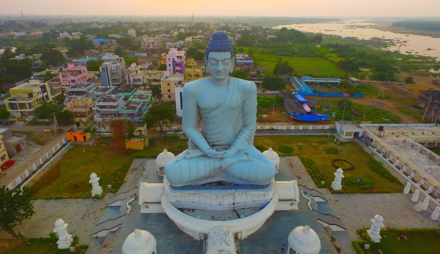
- Coffee Plantations: Explore the scenic coffee estates and learn about the coffee-making process.
- Padmapuram Gardens: Beautiful gardens featuring various flowers, trees, and a tree-top hut for visitors.
- Ananthagiri Hills: A scenic spot known for its trekking routes and breathtaking views of the surrounding valleys.
Pilgrimage Sites and Spiritual Destinations
Tirumala Venkateswara
- Tirupati Temple: One of the most revered Hindu temples dedicated to Lord Venkateswara, known for its architectural beauty and rich traditions.
- Akasa Ganga: A sacred waterfall located in the Tirumala hills, believed to have healing properties.
- Venkateswara National Park: A beautiful park surrounding the temple, offering scenic views and a serene environment for visitors.
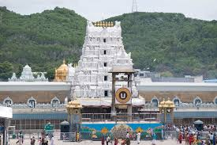
- Srivari Mettu: A scenic walking path leading to the temple, providing a spiritual experience for pilgrims.
- Alipiri: The starting point for those who wish to trek to Tirumala, known for its lush greenery and peaceful ambiance.
- Parakala Mutt: A prominent monastery nearby, known for its spiritual significance and teachings.
Srisailam Mallikarjuna
- Mallikarjuna Swamy Temple: An ancient temple dedicated to Lord Shiva, one of the twelve Jyotirlingas in India.
- Pathala Ganga: A sacred river believed to be the place where devotees can perform rituals for the departed souls.
- Akka Mahadevi Caves: Historical caves associated with the revered saint Akka Mahadevi, offering a serene atmosphere for meditation.

- Srisailam Dam: One of the largest dams in India, offering stunning views and a tranquil environment.
- Chenchu Lakshmi Temple: A temple dedicated to the goddess Lakshmi, known for its beautiful architecture and peaceful ambiance.
- Srisailam Wildlife Sanctuary: A protected area surrounding the temple, home to diverse flora and fauna, ideal for nature lovers.
Historical Sites and Monuments
Golconda Fort
- Location: Situated in Hyderabad, Golconda Fort is a historical fort known for its impressive architecture and rich history.
- Historical Significance: Once the capital of the medieval Golconda Sultanate, it played a crucial role in the region's history.
- Architectural Features: The fort features massive gates, intricate carvings, and an innovative water supply system.
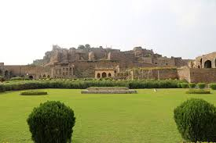
- Light and Sound Show: The fort hosts a captivating light and sound show that narrates its history in an engaging manner.
- Panoramic Views: Visitors can enjoy stunning views of the surrounding landscape from the fort's elevated position.
- Visitor Information: Open for visitors, the fort has guides available to provide insights into its historical significance.
Natural Attractions and Scenic Spots
Talakona Waterfalls
- Overview: Talakona Waterfalls is a stunning natural attraction located in the Sri Venkataparameswara Wildlife Sanctuary, known for its scenic beauty and lush surroundings.
- Height: The waterfall drops approximately 50 meters, creating a mesmerizing sight, especially during the monsoon season.
- Adventure Activities: Visitors can enjoy trekking, nature walks, and bird watching in the serene environment surrounding the falls.
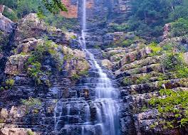
- Flora and Fauna: The area is rich in biodiversity, featuring various species of plants and animals, making it a great spot for nature lovers.
- Accessibility: The falls are easily accessible by road from major cities like Tirupati and Chittoor.
- Best Time to Visit: The ideal time to visit is during the monsoon season (June to September) when the waterfalls are in full flow.
Kailasagiri
- Kailasagiri Hill: A picturesque hill offering breathtaking views of the coastline and the city of Visakhapatnam.
- Giant Buddha Statue: A prominent statue located on the hill, symbolizing peace and serenity.
- Park Facilities: Well-maintained gardens, walking paths, and recreational areas for families and tourists.
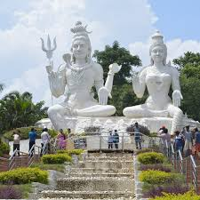
- Adventure Park: A fun park with various activities like zip-lining and rope courses, suitable for adventure enthusiasts.
- View Points: Multiple viewpoints providing stunning vistas of the Bay of Bengal and the city skyline.
- Picnic Spots: Ideal locations for family outings, equipped with benches and shade.
Beaches
Rushikonda Beach
- Beach Activities: Enjoy various water sports like jet skiing, banana boat rides, and parasailing.
- Scenic Views: The beach offers stunning views of the coastline and is perfect for photography.
- Local Cuisine: Experience delicious local seafood and snacks from nearby shacks.
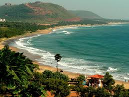
- Beachside Resorts: Relax at nearby resorts and enjoy the serene beach atmosphere.
- Sunset Views: Witness breathtaking sunsets that make the beach a perfect evening getaway.
- Nearby Attractions: Explore nearby attractions such as Kailasagiri Hill Park and Visakhapatnam.
Ramakrishna Beach
- Ramakrishna Beach: A beautiful beach known for its scenic views, water sports, and vibrant atmosphere, popular among locals and tourists alike.
- Submarine Museum: An interesting museum housed in a decommissioned submarine, showcasing naval history and maritime artifacts.
- Victory at Sea Memorial: A memorial dedicated to the soldiers who fought in the sea battles, offering a peaceful spot for reflection.
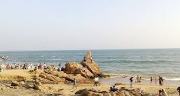
- Thotla Konda: A scenic hilltop offering stunning views of the coastline and a perfect spot for photography.
- Beach Road: A vibrant area with cafes, restaurants, and shops, ideal for leisurely strolls along the beach.
- Iskcon Temple: A beautiful temple dedicated to Lord Krishna, providing a serene atmosphere for worship and meditation.
Yarada Beach
- Yarada Beach: A serene beach known for its clean sand and picturesque views, perfect for a relaxing getaway.
- Scenic Hills: The beach is surrounded by lush hills, offering beautiful landscapes and opportunities for photography.
- Water Activities: Enjoy various activities like swimming, beach volleyball, and sunbathing in a tranquil environment.
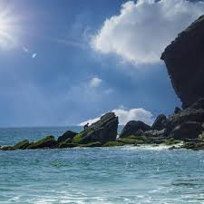
- Nearby Attractions: Close to other attractions like Dolphin's Nose and the beautiful Visakhapatnam coastline.
- Local Cuisine: Enjoy delicious seafood and local Andhra cuisine at nearby eateries.
- Tranquil Atmosphere: A perfect spot for relaxation away from the crowded beaches, ideal for nature lovers.
Cultural and Recreational Spots
Kailasagiri
- Kailasagiri Hill Park: A scenic hilltop park offering panoramic views of Visakhapatnam and the coastline.
- Giant Statue of Shiva and Parvati: Iconic 40-foot tall statues that symbolize the cultural heritage of the region.
- Funicular Railway: A unique cable car ride that provides an exciting way to reach the top of the hill.
- Children's Park: A family-friendly area with various rides and play equipment for kids.
- Eco Park: A lush green space with walking trails, gardens, and an emphasis on environmental conservation.
- Photography Points: Designated spots throughout the park offering breathtaking views for photography enthusiasts.
Bhavani Island
- Scenic Beauty: Known for its lush greenery and serene landscapes, perfect for nature lovers.
- Water Sports: Offers various water activities such as jet skiing, kayaking, and speed boating.
- Cultural Events: Hosts traditional festivals and events that showcase local culture and heritage.
- Picnic Spot: A popular destination for families and friends to spend a day enjoying picnics and outdoor activities.
- Historical Significance: Rich in history with many ancient temples and landmarks in the vicinity.
- Wildlife Watching: Home to diverse flora and fauna, making it a great spot for nature enthusiasts.
Kondapalli Fort
- Historic Significance: Built in the 14th century, Kondapalli Fort offers a glimpse into the rich history of the region and was a stronghold during the rule of the Reddy dynasty.
- Architectural Marvel: The fort features impressive architecture with massive stone walls, a series of temples, and remnants of palaces, making it a must-visit for history enthusiasts.
- Panoramic Views: Situated on a hilltop, visitors can enjoy stunning views of the surrounding landscape, especially during sunrise and sunset.
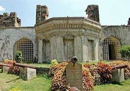
- Adventure Activities: The fort offers trekking opportunities for adventure enthusiasts, providing a chance to explore the rugged terrain.
- Cultural Experiences: Visitors can experience local culture and traditions, especially during festivals and events held at the fort.
- Accessibility: Located near Vijayawada, the fort is easily accessible, making it a popular destination for day trips and excursions.
Other Notable Attractions
Belum Caves
- Belum Caves: The longest caves in India, known for their stunning stalactite and stalagmite formations, attracting adventure enthusiasts and tourists alike.
- Sinkhole: A natural sinkhole that showcases unique geological formations, providing a fascinating exploration opportunity.
- Revered by Buddhists: The caves are also significant for their historical and religious importance, with evidence of ancient Buddhist monks residing here.

- Nearby Attractions: Explore nearby attractions such as the Peddaganjam Mandal and the historical town of Kolimigundla.
- Adventure Activities: Engage in activities like trekking and exploring the beautiful landscapes surrounding the caves.
- Local Cuisine: Don't miss out on trying the local Andhra cuisine available at eateries near the caves.
Kuchipudi Village
- Kuchipudi Dance: Renowned for its classical dance form, Kuchipudi offers performances showcasing intricate footwork and expressive storytelling.
- Bhavanarayana Swamy Temple: An ancient temple dedicated to Lord Krishna, famous for its stunning architecture and spiritual significance.
- Kuchipudi Village Heritage Museum: A museum that highlights the history and evolution of the Kuchipudi dance, featuring traditional costumes and artifacts.
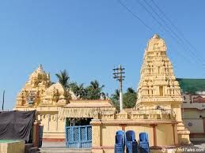
- Folk Art Museum: A museum dedicated to preserving and promoting traditional arts and crafts from the region.
- Annual Kuchipudi Dance Festival: A cultural event that showcases dance performances from various artists and promotes the dance form.
- Local Handicrafts: Kuchipudi is known for its traditional crafts, including handloom textiles and pottery, available in local markets.
Draksharama
- Draksharama Temple: A famous Hindu temple dedicated to Lord Shiva, known for its unique architecture and spiritual significance.
- Gopuram: The temple features an impressive gopuram (tower) adorned with intricate carvings and sculptures.
- Panchaganga River: The temple is situated near the confluence of five rivers, making it a sacred site for devotees.
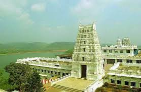
- Historical Significance: The temple is one of the Pancharama Kshetras, holding great importance in Hindu mythology.
- Annual Festivals: Draksharama hosts various festivals, attracting pilgrims and tourists alike, especially during Maha Shivaratri.
- Local Cuisine: Visitors can enjoy local Andhra delicacies in the nearby areas, enhancing their cultural experience.
Nagarjunakonda
- Nagarjunakonda Archaeological Museum: Displays artifacts from the ancient Buddhist civilization, including sculptures and inscriptions.
- Nagarjuna Sagar Dam: A major irrigation project and scenic spot, offering beautiful views of the dam and the surrounding landscape.
- Buddhist Stupa: A significant historical site representing the ancient Buddhist architecture and cultural heritage of the region.
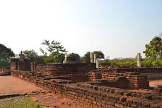
- Remains of Ancient Monasteries: Explore the ruins of ancient Buddhist monasteries that offer insights into the history and culture of Buddhism in India.
- Gautam Buddha Park: A beautiful park featuring statues of Buddha and serene walking paths, ideal for relaxation and meditation.
- Scenic Views: The location provides stunning views of the Krishna River and the surrounding hills, making it a great spot for photography and nature lovers.